Current studies
Custom Sierra Chart studies for the DOM, chart, and trade workflow. Click any card for its description, features, and screenshots.
Studies
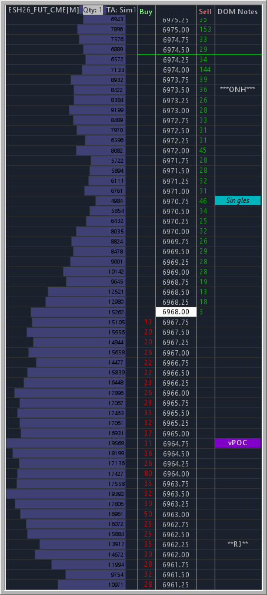

DOM Notes attaches persistent, price-anchored text notes to a Sierra Chart DOM or chart. Place a note at any price level, mark levels such as HOD, LOD, VAH, VAL, POC, and vPOC using preset styles or your own custom labels, and the notes are saved with the chartbook so they stay in place between sessions.
Features
- Double-click a DOM column to add a note at that price
- Drag notes to a new price level, with configurable collision behavior (overwrite, swap, or block)
- 12 style presets for HOD, LOD, VAH, VAL, POC, vPOC, Singles, and more
- Modifier plus click an empty cell to place a preset note in one action
- Customizable presets: names, colors, font styles, and alignment
- Per-note overrides for bold, italic, strikeout, and alignment
- Display in a DOM column (Label, GP1, GP2) or a standalone region column
- Combine increment aware, auto-detects the DOM price scale
- Notes persist with the chartbook
Notes are stored in the chartbook, which has a roughly 4KB limit. The study warns and blocks new notes once that is reached.
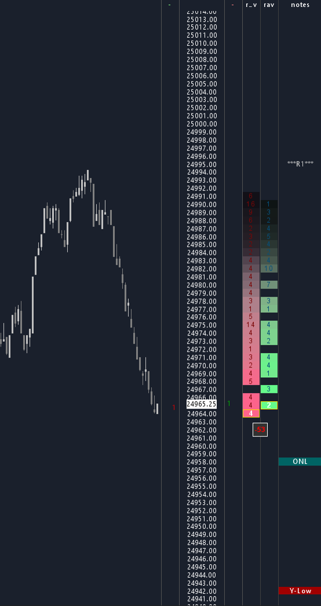

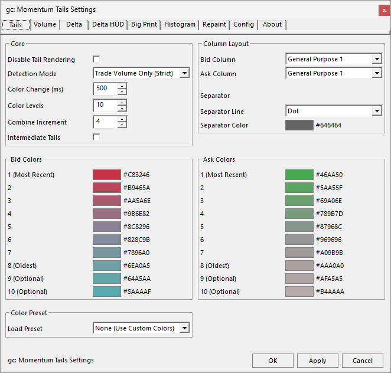
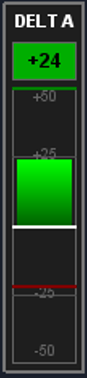
Momentum Tails shows where price has traded and how fast it moved, drawn directly on the DOM or Chart DOM. Each price touch lights up in the brightest tail color and fades through cooler levels over a configurable interval, producing a heat trail of momentum and activity. Optional layers add a delta or volume histogram, a cumulative delta readout, a HUD delta meter, and Big Print highlighting for outsized volume or delta imbalance.
Features
- Color-coded fading tails with up to 10 customizable color levels
- Color presets plus manual custom schemes
- Volume display modes: active tail rows, full visible range, or hidden
- Intermediate tails optionally fill levels between trades for a continuous trail
- Split column mode showing Bid and Ask in one DOM column
- Combine increment aware with auto-detect of the DOM price scale
- Detection modes: Trade Volume Only or Bid/Ask Movement
- Volume Calculation Mode: All Recent Volume or Tail Activity Only, which ignores stale volume that predates the tail
- Big Print highlighting with Decay Timer, Until Revisited, and Both modes
- Delta histogram with Delta, Delta Diagonal, and Volume modes
- Cumulative delta display (Ask minus Bid)
- HUD delta meter with gradient or segmented fill and peak indicators
- Disable Tails to run Big Print, histogram, delta, or the HUD meter on their own
- Right-click quick toggles for the HUD meter, delta display, and histogram, and to clear Big Print highlights
- Tabbed settings window with dark and light themes, plus save, load, export, and import presets
- Subgraph output for Delta, Min Delta, and Max Delta
Thanks to the beta testers whose feedback and suggestions helped shape many of these features.
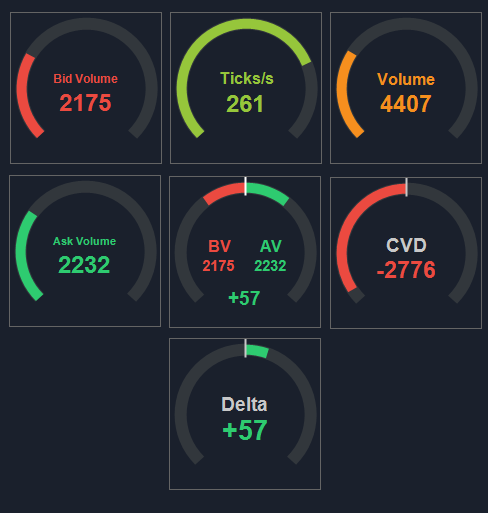

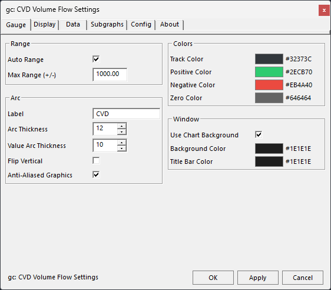
Flow Gauges is a set of floating arc gauges that turn per-bar order flow into a single visual read. Each of the seven gauge types runs as its own study and can be floated over any chart or DOM, embedded with a double-click, and freely resized. Unidirectional gauges fill from zero to the current value, bidirectional gauges fill in opposite directions for positive and negative values, and the dual gauge shows two values at once.
Features
- Seven gauge types: Volume, Bid Volume, Ask Volume, Bid vs Ask Volume, CVD, Delta, and Tape
- Float over any chart or DOM, or double-click to embed
- Resizable, with text and arc thickness scaling proportionally
- Anti-aliased arc rendering in floating mode
- Auto Range that ratchets the gauge max up to the session high
- Threshold markers and evenly spaced auto division marks
- Auto color gradient for unidirectional gauges, positive and negative colors for bidirectional
- Right-click quick toggles for Auto Range, flip, auto color, labels, and values
- Subgraph output of each gauge value
- Tabbed settings window with dark and light themes
- Presets: save, load, export, and import per gauge type
Free bundle
Eight smaller studies that ship together in a single DLL. Download it once and add the ones you want.
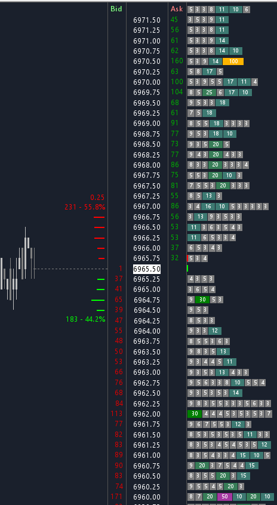

MBO Blocks visualizes Market By Order data as color-coded blocks on your DOM or chart. Individual limit orders are stacked at each price level, sized proportionally and colored by quantity range, and the study tracks when orders change price or size. Requires Sierra Chart Service Package 12 (Integrated Advanced MBO) with Market by Order data. If blocks do not appear, see Troubleshooting MBO Data.
Features
- Render in DOM columns (GP1/GP2/Label) or as a virtual column on any chart or DOM
- 15 quantity filter tiers per side, with custom block and text colors
- Front of Queue markers for Bid and Ask
- Flexible scaling with multiple block scaling methods and a configurable scale factor
- Combine increment aware, auto-detects your DOM grouping
- Minimum size filter to hide small orders and reduce noise
- Works on charts and DOMs, auto-detecting the window type and adapting the layout
- Order tracking marks orders that change price or size
- History tails plus a hover or pin snapshot window showing an order's movement trail
Acknowledgment: the original concept of visualizing MBO orders as colored blocks was inspired by MotiveWave, brought to my attention by ZigsOnTheBid in the Sierra Chart Discord. It has since evolved with original features; the original text-only version is on GitHub.
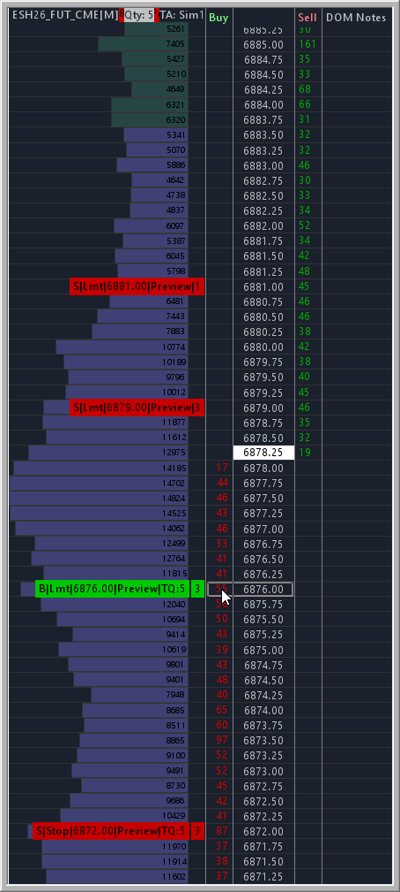

Trade Bracket Preview shows your bracket orders before you place them. It draws labeled entry, stop, and target lines at the hovered price based on your active Trade Window settings, and works on both Chart and DOM.
Features
- Live entry, stop, and target lines from your Trade Window
- Match Sierra Chart order line colors or use custom colors
- Above or below market warning and Trade Lock warning
- Quick Trade Window config switching via a popup menu
- DOM direction detection (Buy column long, Sell column short)
- Chart direction modes: Auto-Flip, Fixed Long, Fixed Short, Separate Keys
- Auto-hide when a position is open
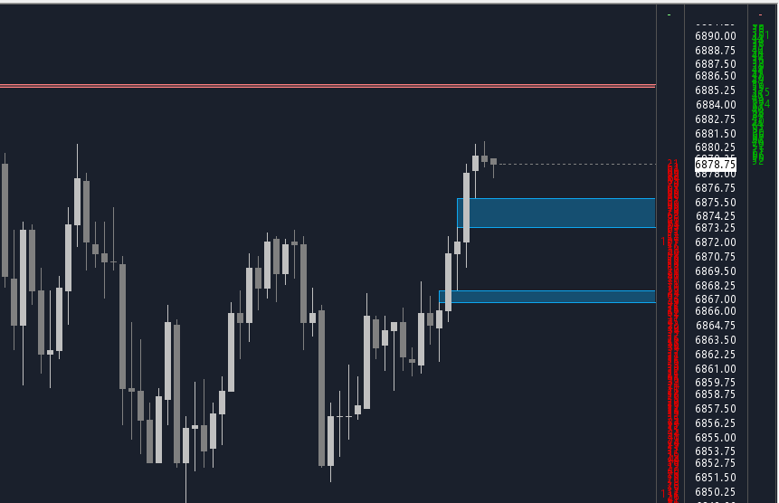

Fair Value Gap identifies and draws Fair Value Gaps, the three-bar price pattern where a strong move leaves a gap between the first and third bar wicks.
Features
- Independent settings for up and down gaps
- Configurable line style, width, color, fill color, and transparency
- Extend right: None, Last Bar, or Chart Edge
- Auto-hide when a gap is filled, with optional midline
- Minimum gap size filter and bar lookback limit
- Optional external study filter to qualify which candles produce gaps
- Subgraph outputs tracking high and low for up to 14 active gaps
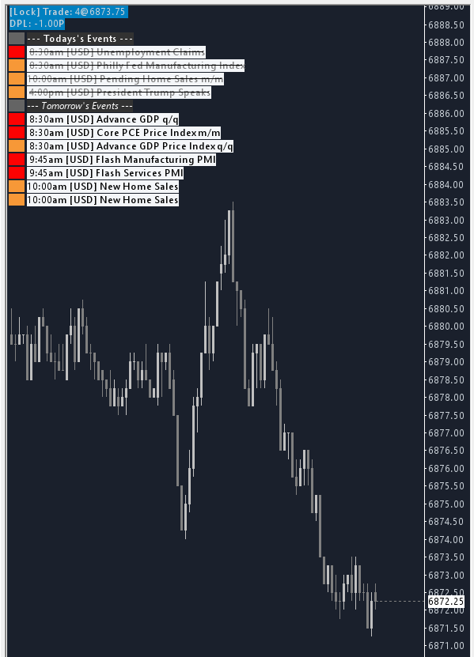

Forex Factory Events downloads the week's economic events from Forex Factory and displays them on your chart, so scheduled releases are visible alongside price.
Features
- Filter by currency and by impact level
- Independent styling for past, upcoming, and current events
- am/pm or 24-hour time, with optional Forecast and Previous values
- Adjustable font size, event spacing, and position offsets
- Hide past events, optionally show tomorrow's events
- Subgraph candle coloring before and at event time for Sierra Chart alerts
- Configurable update and retry intervals
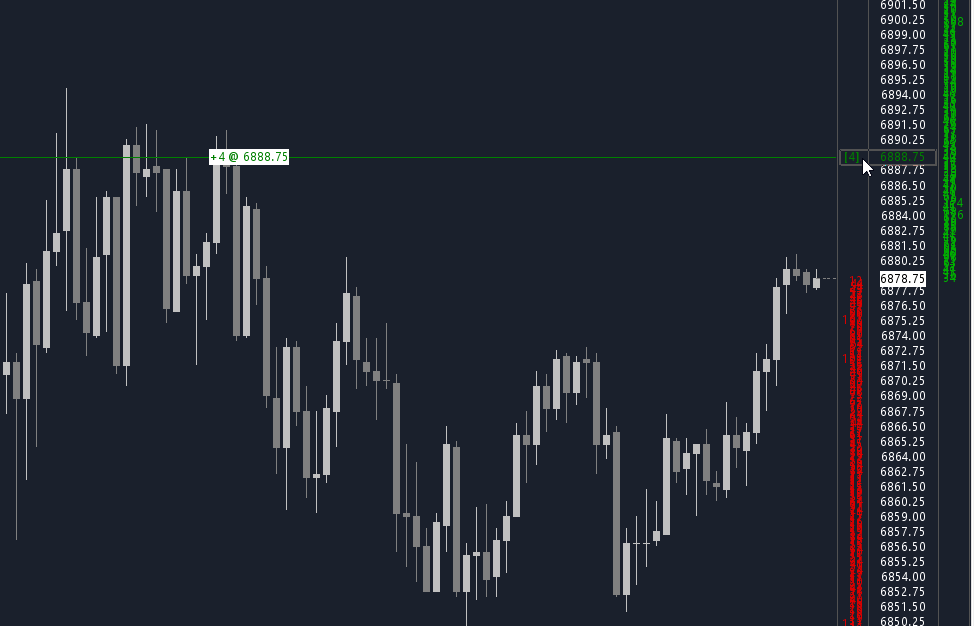

Chart DOM Auto X Hair draws a cross hair across the chart when you hover over Chart DOM columns. An order preview label shows the order that would be placed at the hovered price, including direction and quantity, with optional Trade Lock status.
Features
- Cross hair across the chart when hovering Chart DOM columns
- Order preview label showing direction and quantity at the hovered price
- Optional Trade Lock status display
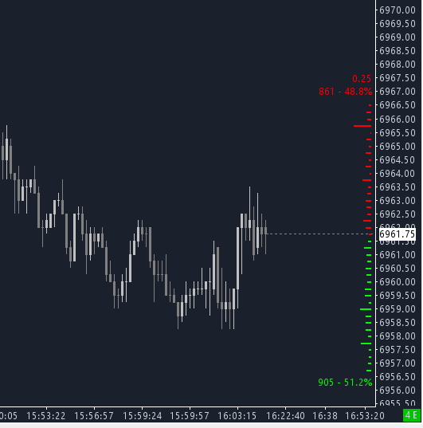

DOM Graph is a depth graph that controls its own depth level. Sierra Chart's built-in DOM graph is tied to the chart's Market Depth setting, so limiting it limits depth for every study. This study lets you keep full depth on the chart for other studies while independently controlling how many levels the graph displays.
Features
- Configurable maximum depth levels, independent of the chart Market Depth setting
- Bid and ask bar colors with gradient blending
- Adjustable bar width and line thickness
- Show or hide volume numbers, totals, percentages, spread, and bid/ask prices
- Highlight the level with the greatest volume
- Font source: Chart Text or DOM Quantities
- Horizontal offset for positioning
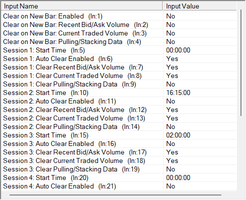

Auto Clear Bid/Ask Volume automatically clears DOM volume and order flow data on a schedule or when new bars form. It handles three independent data types: Recent Bid/Ask Volume, Current Traded Volume, and Pulling/Stacking data.
Features
- Six configurable session times
- Per-session control over which data types to clear
- Sessions 1 and 2 default to your Regular and Evening session start times
- Optionally clear selected data types on each new bar
- Detects timeframe changes and chart reloads to avoid false triggers
- Clearing Pulling/Stacking data affects all charts in the instance
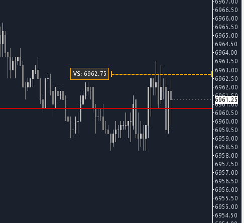

Auto Update Order Quantity updates the Trade Window order quantity based on whether you are flat or in a position. It only changes the quantity value and does not submit, block, or manage orders.
Features
- Separate order quantities for flat and in-position states
- Scale out by percentage with configurable rounding
- Applies to all manual buy and sell orders
- Optional Virtual Stop Line drawn at a configurable tick offset from entry
- Configurable Virtual Stop Line color, width, style, length, and price label
- The Virtual Stop Line is a visual reference only, not a real stop order
The download buttons give the current build. Want everything at once? Download all studies (zip). Need an older or version-specific Sierra Chart build? Browse all releases.
These studies are shared as-is, as a best-effort hobby project. They come with no guarantee of compatibility with current or future Sierra Chart versions, and no obligation of support. Test any study in simulation before using it in a live trading environment. If you would like to support the project, you can contribute here.